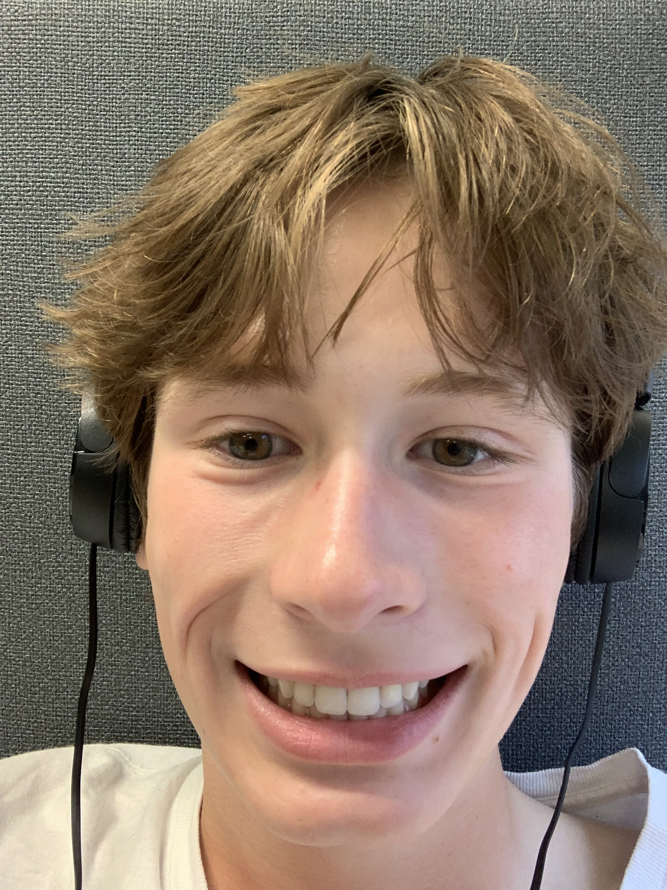

Rylan Sedlacek
Computer Science Student at the University of Mary Washington
About:
I am a third-year computer science student at the University of Mary Washington (UMW) in Fredericksburg, Virginia. During my time at UMW I have worked on lots of exciting projects, which are listed above.
Besides academics, I have many great friends at UMW who, thankfully, prevent me from studying constantly. I’m also a member of UMW’s track team, a team I enjoy practicing and competing with. Get dirty, Go Wash.